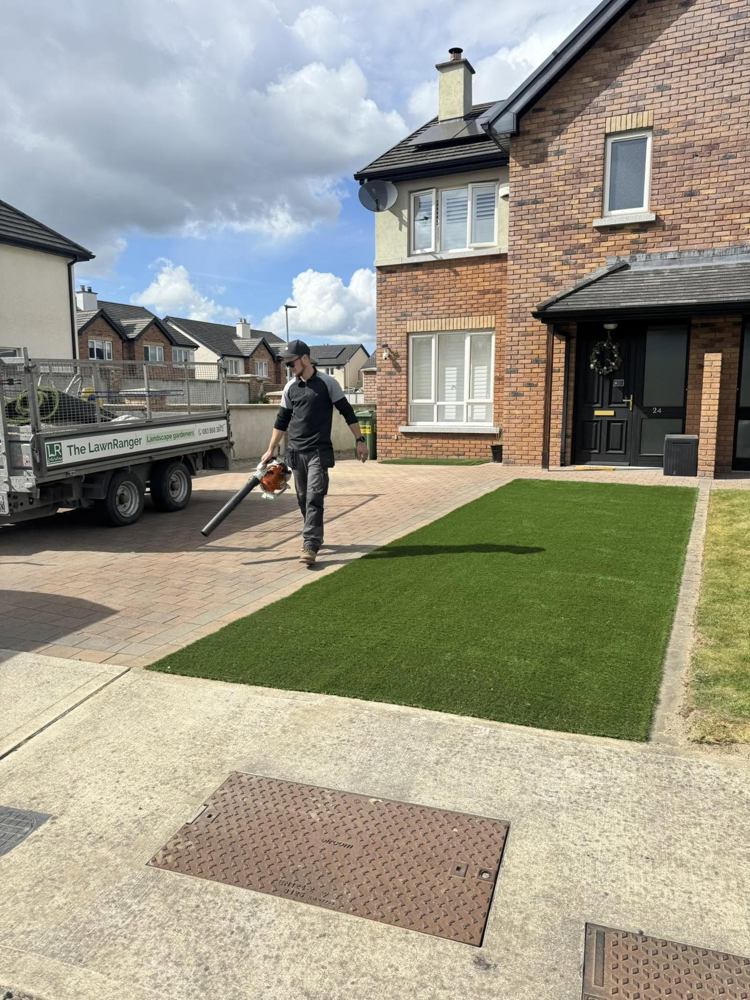
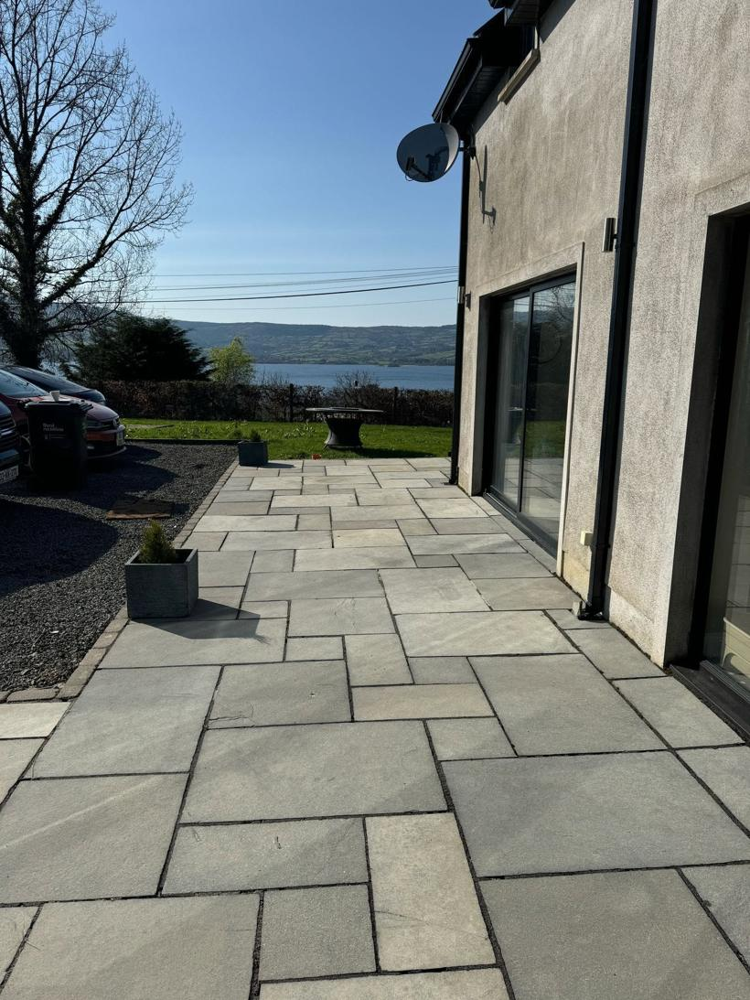
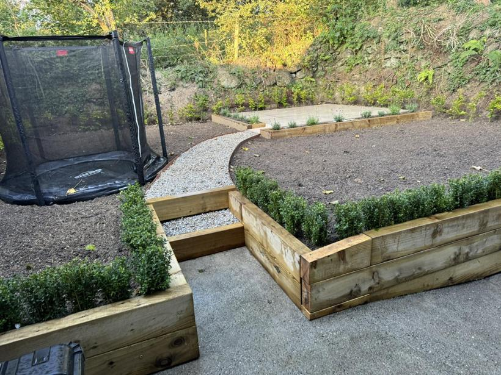
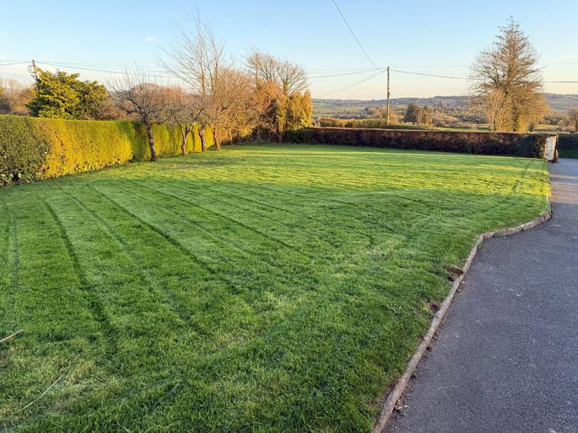
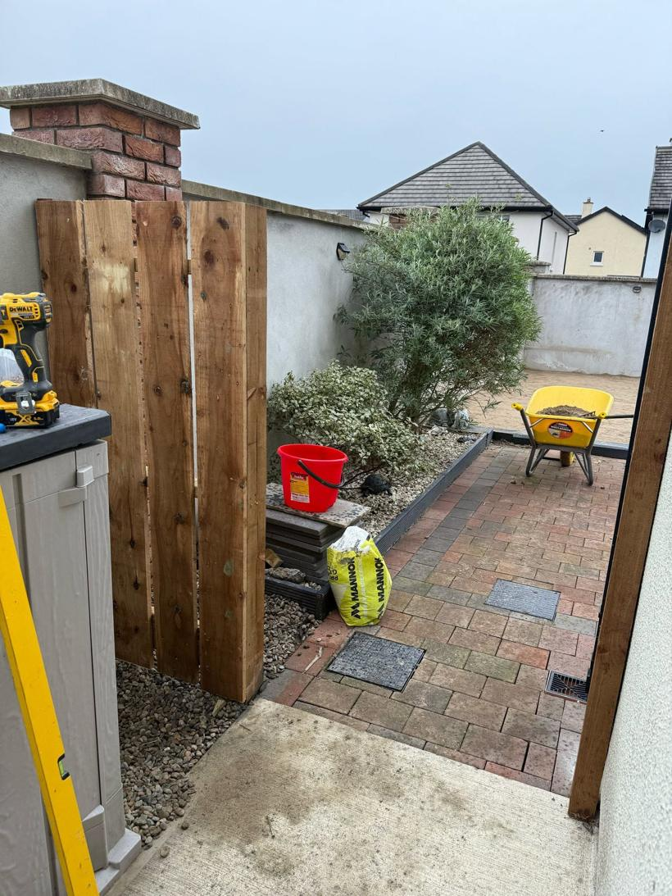
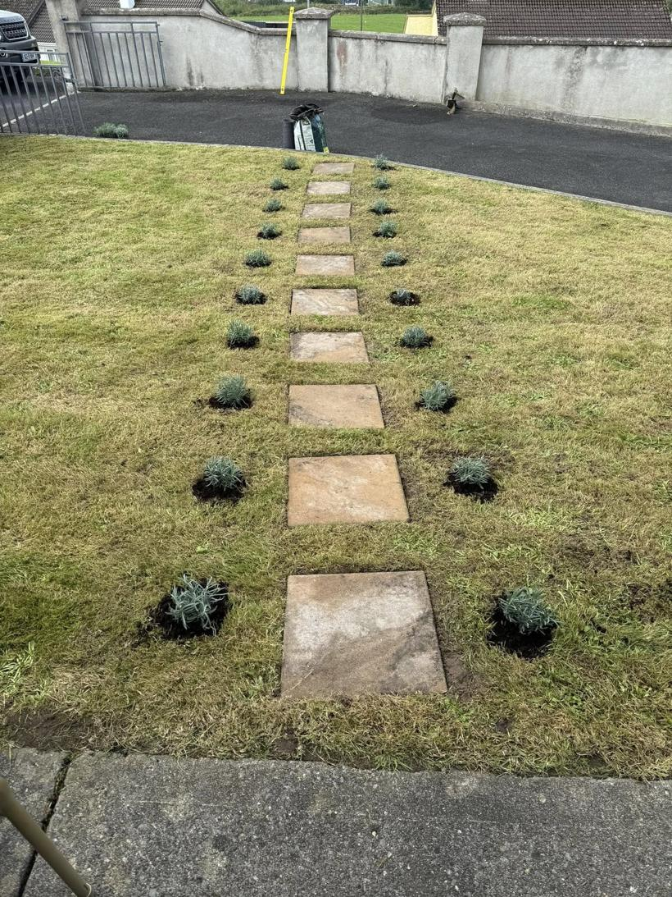
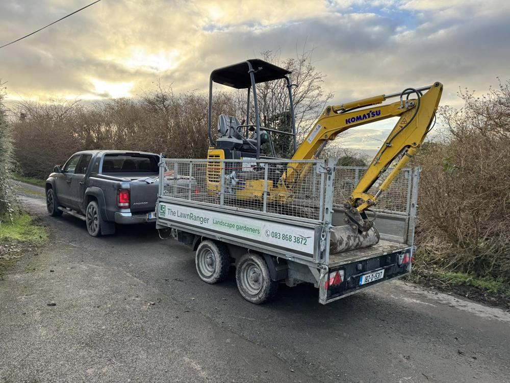
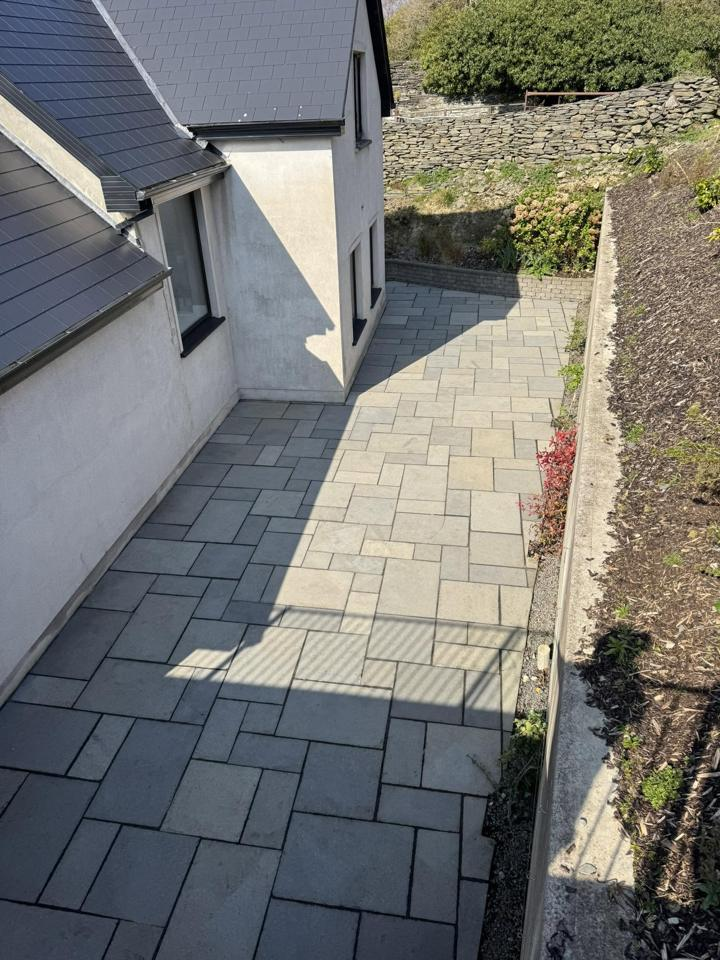
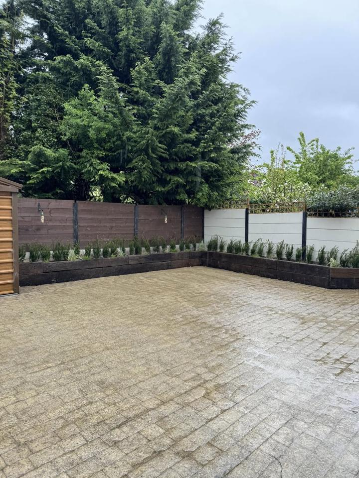
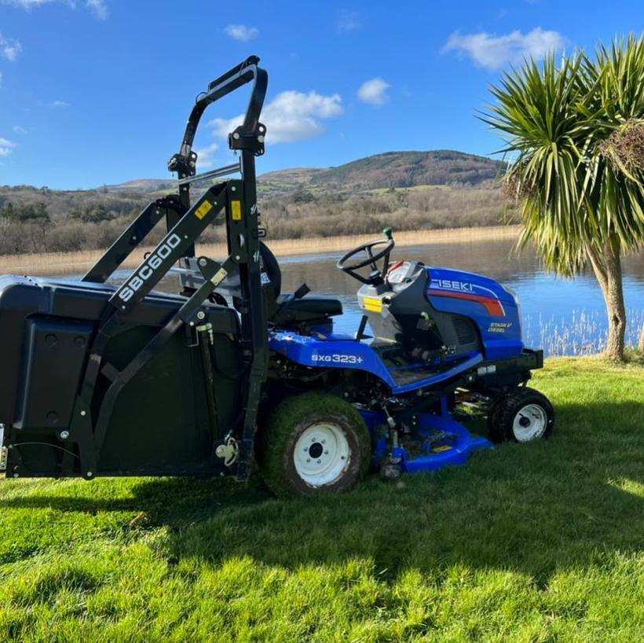

Artificial grass, paving, planting and full garden makeovers from a local team that turns up and does a proper job.
From a quick tidy to a full transformation, across Tipperary, Limerick and Clare.
Supplied and fully installed on a proper base, front and back gardens that look real and stay green all year.

Indian sandstone, slabbing and paved driveways, laid clean and level to last.

Raised beds, gravel, planting and lawns, we take on the whole transformation.

New lawns, mowing and estate grounds kept sharp with the right kit for any size.

New fencing, gates and boundary work, finished to a high standard.

Stepping-stone paths, flower beds and planting that lift the whole space.
The LawnRanger is run by Christopher Ryan, serving homes and businesses across Tipperary, Limerick and Clare. We bring our own kit, from ride-on mowers to a mini digger, so we can handle anything from a small garden to a full estate, and we turn up when we say we will.
We also supply hardwood and softwood firewood logs.

A few gardens we have transformed lately.



“Couldn’t recommend Chris and his team highly enough. They did a sensational job installing artificial grass and a new gate. Great to communicate with at every stage, and such a nice lad as well. 10/10.”Colm Kiely, Facebook recommendation
Yes. Artificial grass for front and back gardens is one of our most popular jobs, supplied and fully installed on a proper base so it looks real and lasts.
We work across Tipperary, Limerick and Clare, including Castletroy, Monaleen and the surrounding areas.
Yes. From paving and walkways to planting and new lawns, we take on complete garden transformations.
Yes, we have hardwood and softwood logs. They should be dried out before burning.
Call or text Christopher on 083 868 3872 and we will arrange to come and see the job.
Call or message and we will come and see the job.